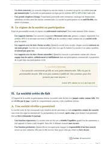

L'arrêt Vilgrain sur le devoir de loyauté du dirigeant, expliqué simplement
Le 27 février 1996, dans l'arrêt Vilgrain (pourvoi n° 94-11.241), la chambre commerciale de la Cour de cassation juge que le dirigeant d'une société doit une loyauté à tout associé. Un président qui intervient dans la vente des actions d'une associée et les rachète sans lui révéler qu'il négocie déjà leur revente à un prix bien plus élevé commet donc une réticence dolosive, et il doit réparer le préjudice de cette associée.

Que dit l'arrêt Vilgrain en résumé ?
L'arrêt Vilgrain pose un devoir de loyauté qui s'impose au dirigeant d'une société envers tout associé. Quand le dirigeant intervient dans la vente des titres d'un associé et les rachète, il doit donc lui révéler les négociations qu'il mène pour les revendre plus cher.
S'il se tait, il commet une réticence dolosive. Le dol est une tromperie qui amène quelqu'un à conclure un contrat. La réticence dolosive est le dol commis par le silence, quand une partie cache volontairement une information qui aurait changé la décision de l'autre.
Cet arrêt revient souvent en cas pratique, dès qu'un dirigeant rachète les titres d'un associé qui ignore une négociation de revente en cours. Il sert aussi en dissertation sur l'obligation d'information.
Quand un acheteur ordinaire connaît la vraie valeur d'un bien, il peut garder cette information pour lui (arrêt Baldus). Le dirigeant d'une société doit, lui, révéler ses négociations de revente quand il intervient dans la vente des titres d'un associé et les rachète, car le devoir de loyauté s'impose à lui envers tout associé.
M. Vilgrain charge la société Lazard d'aider les membres de sa famille qui contrôlent la CFCF à trouver un acquéreur pour leurs titres, et il le cache à Mme X....
Mme X... vend ses 3 321 actions de la CFCF à 3 000 francs l'action, à M. Vilgrain et, par son intermédiaire, à trois autres acquéreurs.
Trois des acquéreurs revendent leur participation dans la CFCF à la société Bouygues, à 8 800 francs l'action.
La cour d'appel de Paris condamne M. Vilgrain pour réticence dolosive. La Cour de cassation rejette son pourvoi.

Fiche complète
Droit des sociétés L3, semestre 1
Les faits, des actions vendues 3 000 francs et revendues 8 800
Une femme, que l'arrêt désigne par la seule initiale X..., possède 3 321 actions de la Compagnie française commerciale et financière, la CFCF. Une action est une part du capital d'une société, et chaque actionnaire en détient un certain nombre. Le président de la CFCF, c'est-à-dire son dirigeant, est M. Bernard Vilgrain.
Mme X... veut vendre ses actions. Elle demande donc à M. Vilgrain de lui chercher un acquéreur.
Le 27 septembre 1989, elle vend ses 3 321 actions à 3 000 francs l'action. Les acquéreurs sont M. Vilgrain lui-même et, par son intermédiaire, trois autres personnes, MM. Francis Z..., Pierre Z... et Guy Y..., que l'arrêt appelle les consorts Z.... En effet, M. Vilgrain s'est porté fort pour eux. Une personne se porte fort lorsqu'elle promet à l'autre partie que quelqu'un d'autre ratifiera l'opération, c'est-à-dire qu'il l'acceptera. Ici, M. Vilgrain promet donc que les trois acquéreurs accepteront la vente.
Le contrat contient aussi une clause de complément de prix. Si les consorts Z... revendent toutes leurs actions de la CFCF avant le 31 décembre 1991, la moitié de ce qui dépasse 3 500 francs par action revient à Mme X....
Quatre jours plus tard, les consorts Z... revendent leur participation dans la CFCF à la société Bouygues, au prix de 8 800 francs l'action. Ce prix représente près de trois fois le prix de départ de 3 000 francs.
Or, selon la cour d'appel, M. Vilgrain a gardé deux éléments pour lui au cours de ses entretiens avec Mme X.... En effet, le 19 septembre 1989, huit jours avant la vente, il avait confié à la société Lazard, une banque d'affaires, la mission d'aider les membres de sa famille qui détiennent le contrôle de la CFCF à trouver un acquéreur pour leurs propres titres. Il avait en outre établi, à l'intention de certains actionnaires minoritaires de la CFCF, un mandat de vente au prix minimum de 7 000 francs l'action.
La Cour de cassation parle d'un prix « fixé après révision » de 5 650 francs l'action, sans détailler cette révision. Mon calcul de la clause aboutit pourtant exactement à ce chiffre. On enlève 3 500 francs à 8 800 francs, ce qui laisse 5 300 francs, puis on ajoute la moitié de cette somme, soit 2 650 francs, aux 3 000 francs de départ.
La procédure, de la cour d'appel de Paris au pourvoi
Mme X... assigne en justice les consorts Z... pour obtenir réparation de son préjudice. Elle soutient que son consentement a été vicié par un dol, c'est-à-dire qu'elle a vendu parce qu'on lui a caché une information importante.
Par un arrêt du 19 janvier 1994, la cour d'appel de Paris retient une réticence dolosive de M. Vilgrain et le condamne à lui payer 10 461 151 francs, avec intérêts au taux légal à compter du 1er octobre 1989. De plus, cette somme correspond, à un franc près, à 3 321 actions multipliées par 3 150 francs, soit l'écart entre le prix de revente à Bouygues (8 800 francs) et le prix après révision (5 650 francs). Cette coïncidence indique probablement que la cour d'appel a mesuré le préjudice par cet écart, même si l'arrêt de la Cour de cassation ne détaille pas ce calcul. Il s'agit de ma déduction.
M. Vilgrain forme alors un pourvoi en cassation, c'est-à-dire un recours devant la Cour de cassation. Il présente trois moyens, c'est-à-dire trois arguments juridiques.
Premier moyen. L'obligation d'informer porte sur ce qui touche à la valeur des titres vendus, et elle ne s'étend pas aux démarches qu'un acheteur mène pour revendre ses propres titres à un tiers. M. Vilgrain ajoute qu'un acheteur est libre d'offrir ou non au vendeur de s'associer à sa négociation, et que Mme X..., assistée d'un avocat spécialisé en droit des affaires, pouvait s'informer elle-même.
Deuxième moyen. Les juges n'ont pas constaté que Mme X... aurait préféré attendre une meilleure offre plutôt que d'encaisser tout de suite 3 000 francs l'action, avec la garantie du complément de prix. Ils n'ont donc pas montré que son erreur était déterminante, c'est-à-dire qu'elle l'a décidée à vendre.
Troisième moyen. M. Vilgrain soutient que la cession qu'il a personnellement conclue est la seule dont il doit répondre. Il ne devrait donc réparer que le préjudice né de cette cession, sans répondre de celles consenties aux autres acquéreurs.
Le problème de droit
La Cour de cassation doit répondre à la question suivante. Le dirigeant d'une société qui intervient dans la vente des titres d'un associé, et qui les rachète, doit-il révéler à cet associé les négociations qu'il a engagées pour les revendre à un prix bien supérieur ? Son silence constitue-t-il une réticence dolosive ?
La solution de la Cour de cassation
La chambre commerciale rejette le pourvoi sur les trois moyens, c'est-à-dire qu'elle confirme la décision de la cour d'appel. Sa réponse au premier moyen contient la phrase que tu retrouves dans les cours de droit des sociétés sur le devoir de loyauté.
Tu peux l'apprendre mot pour mot, car elle fonde la solution.
L'attendu de principe
« ... tout en s'abstenant d'informer le cédant des négociations qu'il avait engagées pour la vente des mêmes actions au prix minimum de 7 000 francs, M. Bernard Vilgrain a manqué au devoir de loyauté qui s'impose au dirigeant d'une société à l'égard de tout associé, en particulier lorsqu'il en est intermédiaire pour le reclassement de sa participation »Cass. com., 27 février 1996, n° 94-11.241, publié au Bulletin
Le cédant est celui qui vend ses titres, ici Mme X.... Le reclassement de sa participation désigne la vente de ses actions à un nouvel acquéreur, et M. Vilgrain y a joué le rôle d'intermédiaire puisqu'elle lui avait demandé de chercher un acquéreur.
La Cour reprend les constatations de la cour d'appel, selon lesquelles M. Vilgrain est intervenu dans la vente de Mme X... et a acquis lui-même ses actions, tout en s'abstenant de l'informer des négociations qu'il avait engagées pour revendre les mêmes actions à 7 000 francs au minimum. La cour d'appel pouvait donc retenir une réticence dolosive.
Sur le deuxième moyen, la Cour rappelle que la cour d'appel avait retenu que, si elle avait été informée de ces négociations, Mme X... n'aurait pas vendu ses actions à 3 000 francs. L'erreur était donc déterminante, et la décision est légalement justifiée, c'est-à-dire correctement fondée en droit.
Sur le troisième moyen, la Cour écarte l'argument pour deux raisons. M. Vilgrain a conclu la cession à titre personnel et en se portant fort pour les autres acquéreurs, donc il est lui-même partie à la convention qui porte sur l'ensemble des titres. Ensuite, il ne résulte ni de ses conclusions ni de l'arrêt d'appel qu'il ait soutenu devant les juges du fond, c'est-à-dire devant les juridictions qui examinent les faits, qu'il ne devait répondre que de sa propre cession. Son moyen est nouveau puisqu'il n'a pas été soulevé devant les juges du fond. Comme son examen suppose de vérifier les faits, il est mélangé de fait et de droit. La Cour de cassation juge seulement l'application du droit, donc elle écarte ce moyen.
Le sens du raisonnement
Le dirigeant se distingue d'un acheteur ordinaire. La Cour retient d'ailleurs son rôle d'intermédiaire, puisque Mme X... l'avait chargé de trouver un acquéreur.
Entre deux contractants ordinaires, chacun défend ses intérêts. Depuis l'arrêt Baldus du 3 mai 2000, un acheteur qui connaît la vraie valeur d'un bien peut la garder pour lui. Ma fiche sur l'arrêt Baldus détaille cette règle, que l'article 1112-1 du Code civil a reprise en 2016.
L'arrêt Vilgrain retient une solution différente pour le dirigeant. La Cour motive peu cette solution, mais voici comment je la lis. Le dirigeant connaît la société de l'intérieur et peut obtenir des informations que l'associé ne peut pas se procurer seul, et Mme X... lui avait confié la recherche d'un acquéreur. Ainsi, M. Vilgrain ne pouvait pas être l'intermédiaire de Mme X... et l'acheteur de ses actions tout en lui cachant les négociations de revente qu'il avait engagées.
Selon ma lecture, l'information cachée est un fait. Il s'agit de négociations de revente déjà engagées, appuyées sur une mission confiée à Lazard et sur un mandat de vente à 7 000 francs au minimum. Depuis la réforme de 2016, le Code civil écarte l'estimation de la valeur du devoir d'information, et cette limite compte ici, puisque M. Vilgrain a tu un fait.
M. Vilgrain a caché la mission confiée à Lazard et le mandat de vente à 7 000 francs, ce qui montre un silence volontaire. La cour d'appel retient en plus que Mme X... n'aurait pas vendu à 3 000 francs si elle l'avait su, donc l'information était déterminante.
La Cour ne cite aucun article dans sa réponse au premier moyen. Le devoir de loyauté du dirigeant repose ici sur la seule jurisprudence.
Ton partiel de droit des sociétés approche ?
Je t'envoie gratuitement mon guide « Réviser le droit sans s'épuiser ». Il t'aide à étaler tes révisions sur tout le semestre, donc à retenir chaque arrêt jusqu'au jour de l'examen.
L'arrêt Vilgrain est-il toujours d'actualité ?
Oui. La chambre commerciale continue d'appliquer le devoir de loyauté du dirigeant, et elle l'a même étendu au-delà de la vente de titres.
Un arrêt du 27 janvier 1998 (Cass. com., n° 96-13.253) précise la sanction possible. Un président de société avait racheté leurs titres à des salariés actionnaires, puis il les avait revendus à une société tierce à un prix qui, selon eux, était beaucoup plus élevé. La cour d'appel avait refusé de les indemniser, car, d'une part, ils ne demandaient pas l'annulation de leur propre cession et, d'autre part, la lésion (un prix déséquilibré) ne permet pas de réviser le prix en la matière. La Cour de cassation casse pourtant cette décision, c'est-à-dire qu'elle l'annule. En effet, la victime d'un dol peut choisir entre l'annulation du contrat et une simple indemnisation en argent, par exemple la restitution de l'écart de prix. Cet arrêt repose sur le dol seul, sans viser la loyauté.
Un arrêt du 12 mai 2004 (Cass. com., n° 00-15.618) apporte deux précisions. D'abord, le cessionnaire de titres, c'est-à-dire l'acquéreur, n'est tenu d'informer le cédant ni des négociations qui visent l'achat d'autres titres de la même société par un tiers, ni de celles qu'il conduit lui-même avec ce tiers pour lui céder ou lui apporter les titres achetés. Ensuite, la Cour casse, en se fondant sur l'article 1382 du Code civil (devenu l'article 1240), la décision qui avait écarté la responsabilité du dirigeant. La cour d'appel constatait que ce dirigeant avait pris l'initiative de la cession, et elle devait donc rechercher s'il n'avait pas caché l'existence des négociations avec un tiers. Ce silence aurait été un manquement à l'obligation de loyauté qui s'impose au dirigeant à l'égard de tout associé.
Le devoir de loyauté s'applique ensuite au-delà de la vente de titres. Dans un arrêt du 15 novembre 2011 (Cass. com., n° 10-15.049), la Cour juge qu'un gérant de société à responsabilité limitée (SARL) ne peut pas négocier, en qualité de gérant d'une autre société, un marché du même domaine que celui de sa propre société, en raison de l'obligation de loyauté et de fidélité qui s'impose à lui. De même, dans un arrêt du 18 décembre 2012 (Cass. com., n° 11-24.305), elle applique la même idée à une société par actions simplifiée (SAS) fondée par des médecins. L'un des dirigeants avait acheté, pour son compte personnel et sans rien dire, l'immeuble que les associés voulaient acheter ensemble pour exercer leur activité. La Cour casse alors la décision qui avait écarté sa responsabilité, car il avait manqué à son devoir de loyauté envers eux.
La réforme du droit des contrats de 2016 a ensuite posé des textes sur l'information et le dol. L'ordonnance du 10 février 2016, applicable aux contrats conclus depuis le 1er octobre 2016, impose à celui qui connaît une information déterminante pour le consentement de l'autre de la lui révéler, si l'autre l'ignore légitimement ou fait confiance à son cocontractant (article 1112-1 du Code civil). Elle définit aussi le dol par réticence comme la dissimulation intentionnelle d'une information dont on connaît le caractère déterminant (article 1137). Toutefois, l'article 1112-1 écarte l'estimation de la valeur de la prestation depuis le 1er octobre 2016. La loi du 20 avril 2018 a ajouté cette exclusion à l'article 1137, pour les actes conclus depuis le 1er octobre 2018. Selon ma lecture, l'arrêt Vilgrain reste compatible avec ces textes, puisque l'information cachée était un fait, des négociations de revente déjà engagées. Seule la jurisprudence pourra confirmer cette lecture sur des faits comparables.
Tout le programme de la matière, du contrat de société aux formes particulières de sociétés, se trouve dans ma fiche de droit des sociétés L3. Elle réunit tous les grands arrêts à connaître. Pour un autre volet de la responsabilité du dirigeant, ma fiche sur l'arrêt du 20 mai 2003 explique quand un tiers peut agir contre lui personnellement.
Les forces et les limites de la solution
La solution protège d'abord un associé qui ne peut pas se défendre seul. Mme X... vend à 3 000 francs l'action, et les consorts Z... revendent leur participation à 8 800 francs l'action quatre jours plus tard. Sans devoir de loyauté, le dirigeant qui a caché des négociations de revente garderait l'avantage de cette information, du seul fait qu'il s'est contenté de se taire.
Le fondement juridique pose ensuite un problème. En 1996, la Cour ne cite aucun texte. En 1998, elle raisonne sur le dol et sur l'article 1116 du Code civil. Ensuite, en 2004, elle se fonde sur l'article 1382, c'est-à-dire sur la responsabilité délictuelle, celle qu'on engage par sa faute envers quelqu'un avec qui on n'a pas conclu de contrat. Enfin, en 2011 et en 2012, elle vise les articles du Code de commerce qui sanctionnent les fautes des dirigeants (L. 223-22 pour la SARL, L. 227-8 et L. 225-251 pour la SAS). Le devoir de loyauté change donc de base selon le litige, et tu dois choisir le bon fondement dans un cas pratique.
La frontière avec la règle ordinaire du Code civil reste elle aussi délicate. L'information cachée par M. Vilgrain est un fait, des négociations de revente engagées avec un prix minimum de 7 000 francs. Ce fait renseigne aussi sur la valeur des actions, puisqu'un prix minimum de 7 000 francs montre ce que les vendeurs en attendent. La limite entre un fait et une simple estimation de valeur reste donc difficile à tracer, et les articles 1112-1 et 1137 n'ont pas supprimé cette difficulté.
L'étendue du devoir reste enfin incertaine. L'arrêt vise le dirigeant à l'égard de tout associé et ajoute « en particulier lorsqu'il en est intermédiaire », ce qui pose la question du dirigeant qui achète sans avoir été chargé de trouver un acquéreur. L'arrêt du 12 mai 2004 apporte une partie de la réponse, puisqu'il invite à rechercher si un dirigeant qui avait pris l'initiative de la cession a caché des négociations, alors que le simple acquéreur reste libre de se taire.
Comment utiliser l'arrêt Vilgrain dans une copie
Dans un cas pratique. Cet arrêt sert quand un énoncé montre un dirigeant qui rachète les titres d'un associé, ou qui l'aide à les vendre, alors qu'il a engagé des négociations de revente. Tu commences par rappeler la règle ordinaire, à savoir qu'un acheteur n'est pas tenu de révéler son estimation de la valeur (arrêt Baldus, article 1112-1 du Code civil).
L'étape suivante est l'exception de l'arrêt Vilgrain, puis la qualification de la réticence dolosive. Il faut montrer que l'information était déterminante et que le dirigeant l'a volontairement tue. La sanction termine le raisonnement, soit des dommages-intérêts, c'est-à-dire une somme d'argent qui répare le préjudice, soit l'annulation de la vente, au choix de la victime (arrêt du 27 janvier 1998).
Dans une dissertation sur l'obligation d'information. Cet arrêt montre que la loyauté demandée varie selon la qualité du contractant. Une première partie peut exposer la règle ordinaire avec l'arrêt Baldus, et une seconde ses exceptions, dont le devoir de loyauté du dirigeant.
Dans un commentaire d'arrêt. Le commentaire insiste sur l'absence de fondement textuel et sur la formule « en particulier lorsqu'il en est intermédiaire », puisque son étendue fait débat.
Tu retrouves toute la méthode sur ma page sur le cas pratique, et celle consacrée à la fiche d'arrêt explique comment lire une décision avant de rédiger. Dans la même matière, ma fiche sur l'arrêt du 18 avril 1961 sur l'abus de majorité montre comment le juge sanctionne une décision prise contre les minoritaires.
Les erreurs à éviter avec cet arrêt
- L'information cachée est une négociation de revente. La Cour sanctionne le silence sur les négociations de revente engagées, avec la mission confiée à Lazard et un prix minimum de 7 000 francs. Un résumé par une obligation d'informer sur la valeur des titres te ferait perdre des points, car la valeur relève de l'arrêt Baldus et de l'article 1112-1.
- Le devoir s'impose au dirigeant. Un simple acquéreur reste libre de se taire sur ses négociations avec un tiers (Cass. com., 12 mai 2004, n° 00-15.618). Dans ta copie, tu démontres donc la qualité de dirigeant avant d'invoquer l'arrêt.
- La Cour ne vise aucun article en 1996. Tu cites l'arrêt lui-même et tu laisses le fondement textuel aux arrêts postérieurs, qui se rattachent selon les cas à l'article 1382, à l'article L. 223-22 ou aux articles L. 227-8 et L. 225-251.
- La sanction jugée est une indemnisation. La cour d'appel accorde des dommages-intérêts à Mme X..., et l'arrêt de 1998 confirme que la victime d'un dol peut choisir cette voie sans demander l'annulation du contrat.
- Vilgrain est le nom du président de la CFCF. C'est le seul nom de famille donné en clair dans l'arrêt. Les autres personnes apparaissent sous les initiales X..., Y... et Z..., et tu ne les cites donc jamais par leur nom.
Questions fréquentes
Que dit l'arrêt Vilgrain en une phrase ?
Quelle est la date et le numéro de pourvoi de l'arrêt Vilgrain ?
Le dirigeant doit-il informer l'associé de la valeur de ses titres ?
L'arrêt Vilgrain est-il toujours d'actualité ?
Comment citer l'arrêt Vilgrain en copie ?

Le devoir de loyauté du dirigeant est un chapitre parmi d'autres du droit des sociétés.
Ma fiche de droit des sociétés L3 réunit les grands arrêts et toutes les notions du programme. Chaque explication y est écrite en mots simples, et tu peux la réutiliser en commentaire comme en cas pratique.
Voir la fiche de droit des sociétés L3